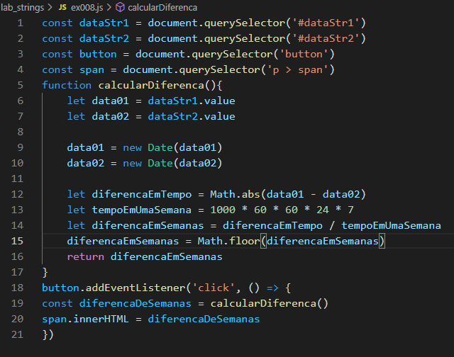

Laboratório JavaScript
João Luiz Rezende Silva
8. Faça um programa que leia duas datas e indique em semanas a distância entre elas. Por exemplo: 02/05/2017 e 02/07/2017 resultado = 8 semanas.
Código:

Calcular
Semanas =
?
Clique aqui para retornar para a lista